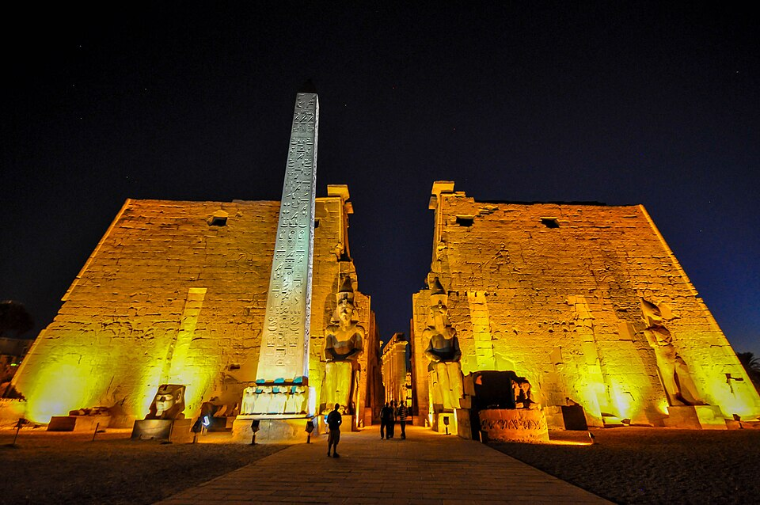

Мин — один из самых древних богов Египта: его знамя несут ещё на додинастических палетках, за полтысячи лет до пирамид. Его город — Коптос (Гебту) на подходе к восточной пустыне, и это объясняет всё его существо: Мин — бог плодородия полей и одновременно хозяин пустынных дорог, по которым шли караваны к бирюзовым копям Вади-Хаммамат. Тот, кто даёт всходит зерну, тот же даёт вернуться живым из жажды.
Его имя значит примерно «основатель» / «тот, кто устанавливает», а в эпитетах он — «бык своей матери» (Камаутеф): чистая производительная сила, не знающая устали. Позже его «бычью» ипостась унаследует Ментху, а имя вольётся в великое триединство Мин–Амон–Ра — «Ра, который дал семя».
Как его видеть
- Мумия с одной поднятой рукой: правая рука поднята и сжимает кнут (сегс) — жест силы и «подъёма» урожая.
- Левая рука — у живота, иногда держит лотос или булавовидный знак: связь с ароматом и жизнью.
- На голове — две высокие перья между рог (как у Ментху), лицо часто чёрное или тёмно-бурое: он и мумия, и живой бык.
- Священное растение — дикий салат (лактука): его приносили Мину в храмах Коптоса — верили, что он усиливает плод.
- В храме Хатшепсут при «рождении» Мин участвует в обряде зачатия божественной дочери Ра — бог семени при царице.
Обряд седа: «поднять руку»
На юбилейном празднике седа фараон устанавливал камень Мина и совершал бег по кругу — ритуал обновления царской мощи. При этом произносилось: «Я воздвигаю тебе камень Мина, дабы ты поднял руку твою для [царя]». Мин здесь — свидетель и источник мужской силы трона: каждая годовщина правления — маленькое возрождение, и бог семени ставит под него свою подпись. Тот же обряд перенесли в Птолемеиды, и в храме Ху (Эдфу) его стены сохранили сцены «поднятия» до сих пор.
Дороги и копи
Восточная пустыня давала Египту бирюзу (Вади-Хаммамат), золото, медь и камень для статуй. Над входом в каждую долину — надпись «Мин, владыка восточной горы»: караваны молились ему о воде и возврате. В коптиосском храме хранились списки экспедиций с именами и числом людей; Мин был и начальником конвоя, и судьёй дороги. Здесь он — предвестник Собека и Анубиса в их «пустынных» ролях: господин границы между возделанным и диким.
Мин и Рет-тауи
Супругу (или ипостась) Мина звали Рет-тауи — «Рат-тауи, владычица двух берегов»: та же богиня, что числится «женой» Ментху. Отсюда троица «Мин–Рет–Гор»: производитель, кормилица, наследник. В Коптосе эту пару чтили как прародителей плодородия: бык-Мин оплодотворяет поля, Рет их вскармливает, Гор — собранное и охраняемое зерно.
Закат и след
С возвышением Фив Мина «перевели» в Амона: жрецы объявили Мина формой Амона («Мин, который в Фивах»), и древний коптиосский бык растворился в барке Амона-Ра. Но в пустынных святилищах и в обряде седа он оставался собой: там, где требовалась нагая, без украшений, производительная сила, звали старое имя — Мин. «Владыка восточной горы» так и стоял на своей скале, пока караваны ходили.
Интересные факты
- Знамя Мина (два столба с перекладиной и флагами) — древнейший божественный штандарт Египта: его несут ещё Нармер-палетка и «Скорпион-царь».
- Имя Мина читается и в личных: «Памин» — «из Мина», как молитва о силе ребёнка.
- Дикий салат-лактука — древнейший известный «афродизиак» на службе культа: его приносили в храм и ели на празднике.
- В Позднее время Мина отождествляли с греческим Паном — оба «дикие», оба «козлоногие силы природы»; Панополь (Ахмим) стал его чужой столицей.